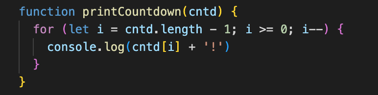

If your website is the human body, HTML would be the skeleton. It keeps everything in place and creates. Structure for your website. It also connects different parts of your body to each other. CSS would be powered by your DNA- it codes the colour of your skin, eyes and hair. Your brain and numero network would be javascript- bringing the body to life allowing it to jump, run, solve a math problem and make a sandwich.

JavaScript is read from top to bottom line by line. Much like you would read this blog! This can be changed using ‘control flow’. Our conditional statements (e.g. if x happens then y else z) and use of ‘loops’ help us control the flow of the code.
This is much like deciding what to wear in the morning. If the weather is cold you will wear a jumper, if it’s raining you will wear a raincoat. If not, you will wear neither of those. You can check each item of clothing to make sure it’s clean and if the colours match each other. And you will only wear clothing that is clean and matches.
Arrays and objects are different ways of storing data in javascript. They are known as ‘reference types’ - functions are also reference types but we’ll get to that later.
Arrays are a type of variable that can hold more than one value as a list. These could be different types of values, strings, numbers, boolean etc. You can declare an array as if you are declaring a variable (using const or let) and you use the square brackets for an array [] instead of parenthesis (). Variables can be objects and arrays are a special type of object.
Here is an example:
Another way of visualising this is using the index it is stored under.
Index:
[0] Tony
[1] Rosa
[3] Fred
Programmers always start counting at 0!
Objects are a continuation of multiple related variables. All packed up as an object. Much like an object - like a coat- has different properties (buttons, thread, lining, fabric, cuffs, brand etc) so can an object in javascript. It’s a nifty way of grouping data. It makes referencing the object easier as well.
Here is an example of a ‘coat’ object:
The data is stored as ‘key-value pairs’ with properties on the left and their values on the right.
Here is how we reference using the dot notation to read/ change the value of a property. We can also use bracket notation using the property name as a string. Looks like dot notation is shorter and looks prettier.

This is the most important object in javascript.
Interacting and manipulating the DOM is how we access objects within our HTML and add some magic to them. The DOM is the JS representation of our HTML, the entire HTML is represented as a document object and all over objects (div, spans etc) fall under that object. You can grab an object like a border and use HTML to change the colour with a mouse click. It can be even more powerful than that and we can manipulate the DOM to bring our site to life by making it interactive.
Interacting and Manipulating the DOM is how we access objects within our HTML and add some magic to them.Earlier we mentioned the reference type of function. Simply put, is a way of writing code that you want to use more than once. Here is the structure of a function:
It’s declared using the function keyword and given a name, parameters (values) and holds the logic of the function. We can then call this function whenever we need it.
We can add inputs to replace parameters in the argument when calling to do interesting things.
Functions are fundamental to writing in javascript. There are many different types of functions. They can perform a task or calculate a value.

Born in Johannesburg, South Africa. I'm here to learn practical skills, make cool shit and find better fonts.